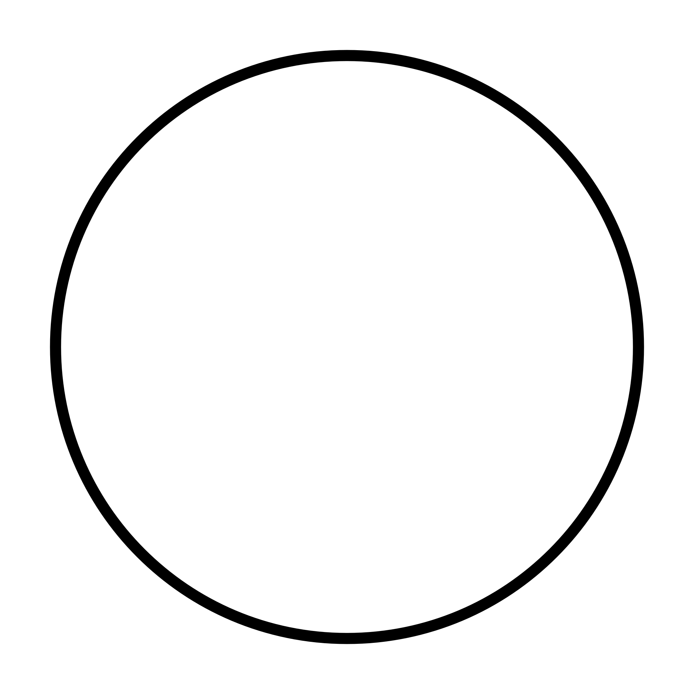

---------------------------
Kenneth Lay
DKI Jakarta,Indonesia
kenneth.lay@binus.ac.id|087780162789
---------------------------
Binusian student who is not sure what he is actually doing right now.
Work Experience
None
Education
Binus University International
Computer Science - S1
Best major
Bunda Mulia School
Highschool
Science Subjects
Bunda Mulia School
Middle School
???
Bunda Mulia School
Primary school (Y2-Y5)
not sure what to fill in
St. Joseph's School
kindergarten,pre-school,SD 1
hmm forgot
Projects
hmmmmm
Awards
Tug of war champion (Sports day middle school 2017-2018)
forgot the rest
Key Skills
I'm not sure
Interest/Hobby
Fish Keeping
Herpetoculture
Sleeping
Eating
Playing video games
| Random |
table |
| Random |
table |